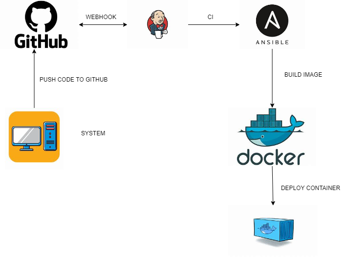
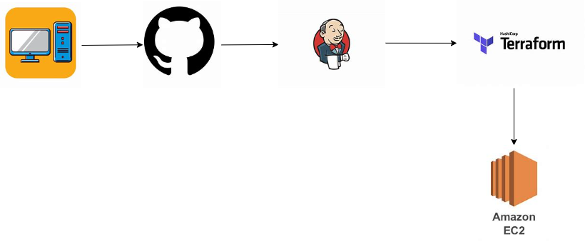
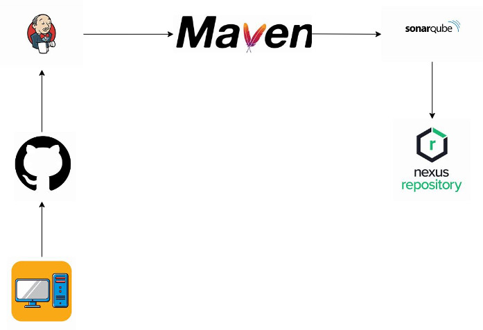
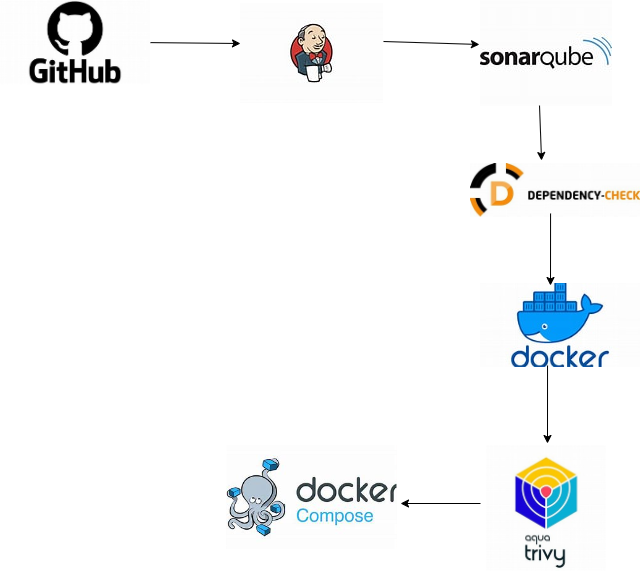

Career summary
I am a dynamic DevOps Engineer with a Bachelor of Technology degree, specializing in designing and implementing robust CI/CD pipelines and scalable infrastructure solutions. My expertise spans cloud platforms like AWS, automation tools such as Ansible and Terraform, and containerization technologies like Docker. With a strong focus on optimizing system performance and ensuring seamless deployment processes, I excel in driving efficiency and innovation across development and operations teams.



